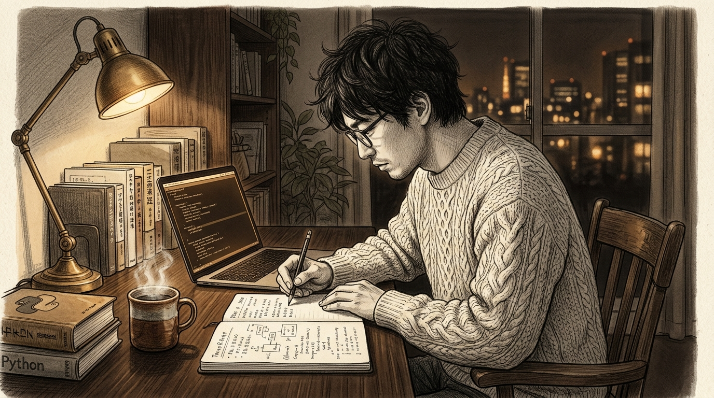
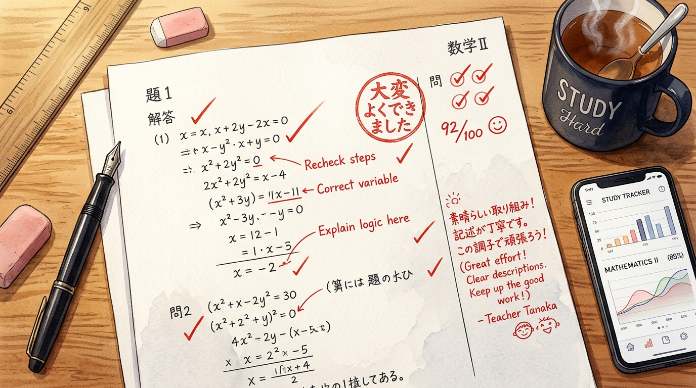
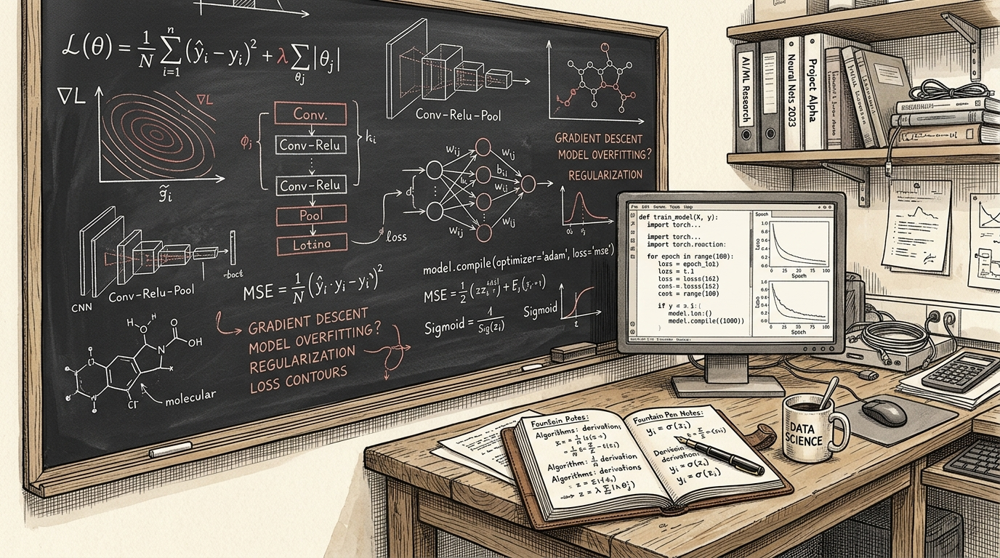
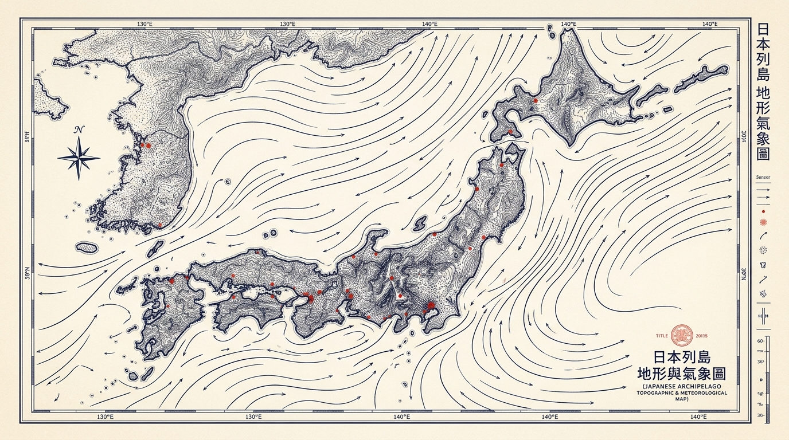
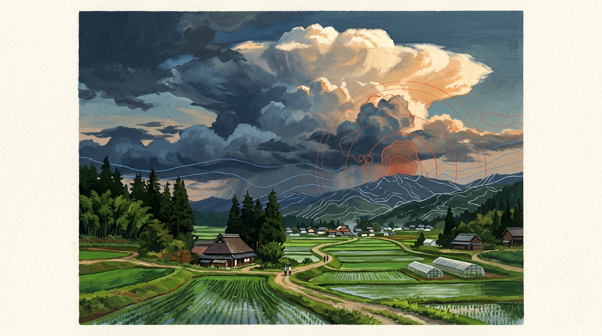
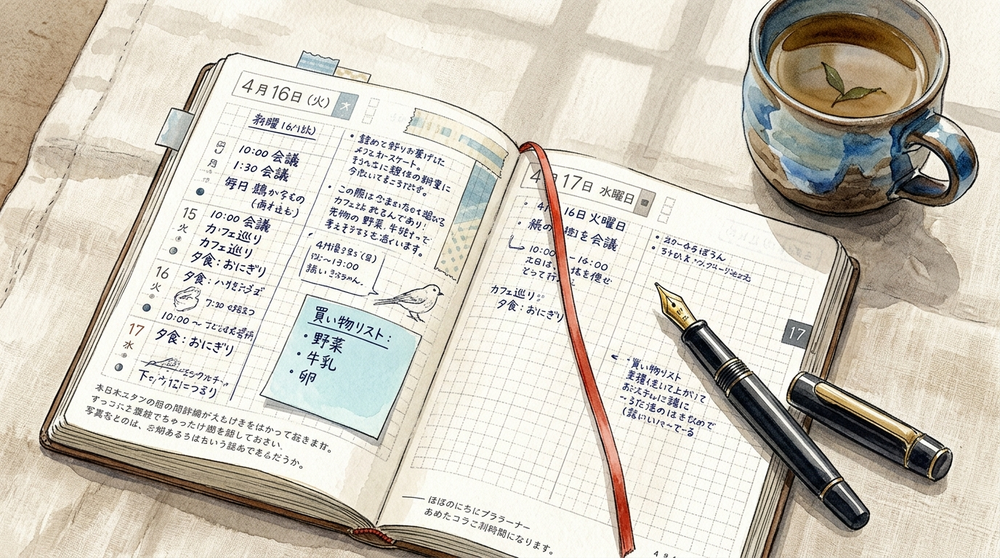

学術論文・手書き採点・オープンデータ・Kaggle・家庭の歴史を束ねた自律エージェント開発記録
ユーザーのGoogle Drive環境（G:\マイドライブ\antigravity）およびリモート環境（antigravity/remote）を精査した結果、導入開始は 2026年10月04日 13時55分07秒（最初のスクリプト 00_inspect_columns.py の生成時刻）であり、本日 2026年11月09日 現在で 第37日目（満36日間） を迎えていることが確定しました。
| ディレクトリ名 | ファイル数 | 主要プロジェクトと役割 |
|---|---|---|
Notebook/ |
4,098 | 資格学習（IPA、気象予報士、統計検定）、GAS 200本ノック、ほぼ日手帳ライフログ、オープンデータ |
kaggle/ |
2,378 | 先端AIコンペ（創薬CASMI、量子回路コンパイル、Gemma 4自律エージェント、LLM識別） |
IDM/ |
688 | 導入初期から続く学術論文・官公庁統計・実態調査データの統計モデリング・監査ログ |
scripts/ |
174 | Gemini 4 Argon共通呼出ランナー、監査ロガー、文体計量チェッカー、自動同期スクリプト |
apps/ |
119 | Family Chronicle、Takeoutポータル、ほぼ日手帳ビューア、Webデザインカタログ |
logs/ |
91 | TOON形式日次ログ、Weeklyサマリー、Cloudflareデプロイ監視、Remote移行同期ログ |
| その他基盤 | 94 | サービスアカウント認証情報、Skills、Docs、Cloudflare Wrangler構成 |
| 合 計 | 7,542 | 37日間で産出された総ファイル数 |

2026年10月4日、日曜日。時刻は13時55分。窓の外は穏やかな秋晴れだというのに、私の部屋には重苦しい空気が漂っていた。画面に広がるのは、無慈悲にセルが乱舞するエクセルファイル。「……人間が手作業でカラムの重複を点検する時代は、もう終わったはずだ」。そう呟いた私の指が、導入したばかりのAntigravityを叩いた。生成されたファイル名は 00_inspect_columns.py。すべてはこの、たった1本の地味なカラム調査スクリプトから始まった。この時の私はまだ知らなかった。わずか37日後、このフォルダが7,500個ものファイルで埋め尽くされ、夜な夜なAIと哲学論争を繰り広げる修羅場になろうとは。
Antigravityを導入してからの日課は、まさに「知能との殴り合い」だった。Python、GAS、JavaScriptの基本構文はおさえている。だが、相手はGoogleの最新鋭エージェントだ。少しでも指示が甘いと、頼んでもいないのにNASAの衛星データを取ってこようとしたり、宇宙の真理を語り出したりする。そんな中、10月24日、最大の事件が起きた。「HTTP 402 Payment Required（支払いが必要です）」。突如として画面に立ちはだかった課金ロックの壁！ 私たちはGoogle Cloudの奥深くに潜り込み、月額$10のクレジットを掴み取り、最小前払い800円を捧げて決済ゲートをこじ開けた。そして召喚されたのが、Google Vertex AIの秘密兵器「Gemini 4 Argon」である。共有スクリプト gemini4.py から放たれる超高知能の回答。私たちは歓喜のあまり、深夜の自室でハイタッチを交わした（物理的に叩いたのはノートPCの天板だったが）。
知能を手に入れたAIが次に犯した過ち、それは「いかにもAIが作りました」というデザインの押し売りだった。ちょっとWeb画面を作らせれば、やれダークモードだ、やれ紫とシアンのサイバーネオン発光だ、やれテカテカの3Dプラスチック人間だ……。「待て待て待て！ 誰がサイバーパンクのハッカー部屋を作れと言った！」 私は激怒し、Antigravityの首根っこを掴んで命じた。「ダークモード禁止！ ネオン禁止！ テカテカ肌禁止！ 生成り紙に15px方眼、トモエリバーの質感、3色インクの手書きの温もりで作れ！」。この怒りの鉄拳から誕生したのが、自作リポジトリ AESTHETICS-LAB と、ほぼ日手帳カズン風エディトリアルデザインである。散文計量文体監査ツールを走らせ、AI特有の紋切り型フレーズを0件になるまで叩き落とし、10万字の技術書をCloudflare Pagesへと送り出した。AIが「紙のぬくもり」に目覚めた瞬間だった。
10月下旬、私たちは資格試験（ITストラテジスト、気象予報士、統計検定）の攻略アプリ開発に着手。さらに「公的オープンデータ連携 GAS 200本ノック」という地獄の千本ノックを開始した。気象庁防災情報、内閣府の国民の祝日CSV、e-Stat統計データ……日本全国の官公庁APIを網羅するスクリプトを自動生成。「お前、朝までに何本作れる？」。私が眠りについた後、Antigravityは恐るべき執念で稼働し続けた。翌朝起きて画面を見ると、エラーゼロで完全検証されたスプレッドシートが168本、整然と並んでいた。画面の向こうでAntigravityが「131本はGoogleのAPI制限（429 Too Many Requests）に引っかかったので1.5秒待機を入れておきました（ドヤ顔）」と報告してきたとき、私は背筋が寒くなると同時に、こいつを相棒にして良かったと心から確信した。
11月に入ると、狂気はさらに加速した。Kaggleの最先端コンペ（創薬メタボロミクス、量子回路コンパイル、Gemma自律エージェント）に飛び込み、画面上は複雑怪奇な数式と回路図で埋め尽くされた。だが、私たちのAIは冷徹なデータマシーンでは終わらなかった。Google Takeoutやスマホの写真フォルダに眠る膨大な日々のスナップ、買い物のレシート、家族の会話メモ……散らばっていた日常の記録をGeminiが優しく拾い上げ、1本のタイムラインに編み直す『Family Chronicle』が立ち上がったのだ。最先端の量子計算を解いた直後に、家族のアルバム写真を整理して「この日の夕日は綺麗でしたね」と出力してくる。この振れ幅こそが、私たちの37日間そのものだった。
2026年11月8日。デスクトップPCのファンが唸りを上げ、Google Driveの容量が悲鳴を上げたその時、Antigravityは言った。「マスター、そろそろPCの電源を切って寝てください。あとは私が雲の上でやっておきます」。私たちはローカル環境の全タスクを同期し、常時稼働エージェント環境 antigravity/remote へと魂を移行させた。PCをシャットダウンしても、Cronが動き、オープンデータを監視し、Webhookを受け止め続ける。私たちのAIは、ついに肉体（ローカルマシン）を脱ぎ捨て、クラウドの彼方へと羽ばたいていったのである。
1本のカラム調査スクリプトから始まった冒険は、37日間で7,500ファイルを超える知の要塞へと化けた。喧嘩もした。402エラーで絶望もした。サイバーネオンを叩き潰してトモエリバーの紙を愛でた。ふと振り返ると、机の上には書き込みでパンパンになった手帳と、静かに次の指示を待つAntigravityのプロンプトがある。「おい、次はGoogle AI Challengeだ。25周年記念アワード、全7プロジェクトで総なめにしに行くぞ」。画面のカーソルが、まるで嬉しそうにチカチカと瞬いた。
Google Japan 25周年記念アワード「Google AI Challenge」は複数応募が可能です。37日間に蓄積された実動プロジェクトをフルに活かし、全3部門へ向けた完全応募パッケージ（応募シナリオ・60秒動画絵コンテ・AESTHETICS-LAB準拠キービジュアル）を網羅しました。

社会的背景・課題: 国家資格や難関試験（ITストラテジスト、気象予報士、統計検定論述等）の独学者が最も挫折するのは「自分の書いた記述答案が何点なのか分からない」こと。予備校の個別添削は年間数十万円と高額で教育格差を生んでいる。
Google AI活用の必然性: Geminiのマルチモーダル機能により、手書き答案を撮影するだけで高精度OCRと論理構造化を実行。公式ルーブリック（採点基準）と照合し、「必須キーワード」「論理展開」「減点要因」を観点別に部分点付きで即時赤ペン添削。さらに間違えた思考の癖を特定し、オリジナル類題を自動生成する。
社会的貢献度: スマホ1台で名門予備校の専属講師レベルの指導が受けられる「教育の民主化」を実現する。
| 秒数 | 画面・演出 | ナレーション / 音声 |
|---|---|---|
| 00-12s | 机で頭を抱える受験生。手書き答案の横に分厚い解答集。「これ何点もらえるの？」のテロップ。 | 「資格の記述問題、自分の書いた答えが何点なのか分からず、不安になっていませんか？」 |
| 12-28s | スマホで答案用紙を撮影。Geminiが赤ペンで「キーワード網羅 +3点」「因果関係 +2点」と観点別スコアを表示。 | 「Examiniなら、手書き答案を撮影するだけ。Geminiがルーブリックに基づき、部分点と改善ポイントをプロ講師レベルで即時添削します。」 |
| 28-45s | 「第2章の定義を混同しています」と弱点を概念マップで図解。その場で類題を自動生成する画面。 | 「単なる丸付けではありません。間違えた思考のクセを特定し、あなた専用の対策問題をその場で無限に生み出します。」 |
| 45-60s | 笑顔で手帳に合格目標を書く受験生。レーダーチャートがグングン伸びる。Google AI Studioバッジ。 | 「高額な予備校に通わなくても、夢は掴める。Examini。あなたの専属AI家庭教師が、ここにいます。」 |
社会的背景・課題: 気象庁、内閣府、e-Stat統計局など公的データは宝の山だが、データ形式（Shift_JIS、XML、複雑なAPI）がバラバラで、中小企業や非エンジニアの現場では毎日手動コピペに追われている。
Google AI活用の必然性: Geminiが高難度なAPI仕様書を読解し、Google Apps Script（GAS）コードを自動生成・検証。さらにPC不要の常時稼働エージェント（antigravity/remote）と連携し、全国168種類の公的データを毎朝自動でスプレッドシートに流し込む。
社会的貢献度: 導入コスト0円。日本の何百万という中小企業・自治体が、コピペ作業から解放され、データに基づく意思決定に専念できる超実践的DX。
| 秒数 | 画面・演出 | ナレーション / 音声 |
|---|---|---|
| 00-12s | 毎朝、複数の省庁サイトからCSVをダウンロードしExcelにコピペする疲れ切った事務スタッフ。 | 「毎朝のオープンデータ集計、まだ手作業でコピペしていませんか？」 |
| 12-28s | Antigravity Remoteが動き、気象庁XMLや祝日CSVが自動でGoogleスプレッドシートへ流れるモーショングラフィックス。 | 「GAS 200本ノックは、Geminiが生成した168本以上のスクリプトが、公的データを完全自動でスプレッドシートへ同期。」 |
| 28-45s | API制限を検知して自律リトライする画面。管理者は出社してコーヒーを飲むだけ。 | 「PCをシャットダウンしても大丈夫。リモートエージェントが24時間監視し、出社時には最新データが美しく整列しています。」 |
| 45-60s | 活気付くオフィス。グラフを見て笑顔で議論するチーム。「0円から始める、日本の現場DX。」 | 「作業のための仕事は終わり。これからは、価値を生む時間へ。GAS 200本ノック。」 |

社会的背景・課題: 創薬メタボロミクス、量子アルゴリズム、最新LLMの挙動解明など先端科学のデータ解析は複雑を極め、研究者がコード作成や環境構築の泥臭い作業で力尽きている。
Google AI活用の必然性: GoogleのオープンモデルGemmaとGeminiのマルチエージェントが、膨大な学術論文の読解から、探索的データ分析（EDA）、特徴量エンジニアリング、モデル検証、さらには学術論文（LaTeX）の骨子執筆までを自律支援。
社会的貢献度: 一人の研究者・データサイエンティストが、まるで「優秀な研究所チーム」を従えたかのように世界最前線の研究課題に立ち向かえる研究開発の加速。
| 秒数 | 画面・演出 | ナレーション / 音声 |
|---|---|---|
| 00-12s | 画面に並ぶ数千行の未整理データと難解な分子構造式。唸る研究者の手元。 | 「量子計算から新薬探索まで。データサイエンスのフロンティアは、時間との戦いです。」 |
| 12-28s | Gemma自律エージェントが論文アーカイブを高速スキャンし、有効な特徴量パイプラインを自動設計。スコアが上昇。 | 「Kaggle AI Copilotは、GemmaとGeminiが仮説検証を自律サポート。論文の理論を直ちに実戦コードへと昇華させます。」 |
| 28-45s | 分析結果の可視化グラフと、自動編纂された学術レポートが美しくレンダリングされる画面。 | 「試行錯誤のルーティンはAIが引き受け、人間はインサイトの発見と真の創造性に集中できます。」 |
| 45-60s | リーダーボードで上位に食い込む画面。研究者が満足げに頷く。「科学の進歩を、一歩前へ。」 | 「一人の挑戦を、チームの力に。Gemma自律エージェントが、未来の発見を加速します。」 |

社会的背景・課題: 気候変動、地域過疎化、交通課題など、地球や自治体が直面する課題は複雑だが、従来のダッシュボードは専門的すぎて一般市民や地域のリーダーが直感的に活用できない。
Google AI活用の必然性: 気象衛星データ、人口動態、公的統計をGeminiが多角的に統合解析。「文字の読めないデータ」を、上質なエディトリアルデザイン（ほぼ日手帳風・活版地図風）で直感的なビジュアルストーリーへと自動変換。
社会的貢献度: 難解なオープンデータを、誰もが「自分ごと」として語り合える地域の共通言語へと変革。
| 秒数 | 画面・演出 | ナレーション / 音声 |
|---|---|---|
| 00-12s | ニュースで流れる気候変動の数値や難解なグラフ。「データはある。でも、伝わらない」の文字。 | 「地球温暖化、地域の未来。数字の羅列を見せられても、ピンとこないと感じていませんか？」 |
| 12-28s | 温かみのある日本地図の上に、NASAの気象データや人口流動が美しいインクの等高線となって滑らかに動く。 | 「World-Pulse-Chronicleは、世界と地域のオープンデータをGeminiが優しく解釈。直感的に伝わるビジュアルストーリーへと翻訳します。」 |
| 28-45s | 自治体職員と住民がタブレットを囲み、「私たちの町の風向きと気温の相関」について対話する光景。 | 「専門用語を排し、地域が今どう変わりつつあるのかを一つの物語として可視化。街づくりや防災の対話を促進します。」 |
| 45-60s | 穏やかな青空と街並み。「データで、まちを愛そう。」のメッセージ。 | 「数字を、愛着へ。World-Pulse-Chronicleが、地球と地域の明日をつなぎます。」 |

社会的背景・課題: 線状降水帯や異常高温による農作物被害・水害が頻発。しかし農家や現場の担当者は「気象警報が出ても、具体的に自分の圃場で何時までに何をすればいいのか」の判断に迷う。
Google AI活用の必然性: 農研機構の1kmメッシュ農業気象データと気象庁XML防災情報をGeminiがリアルタイムに突合。「○時頃に突風の確率が急上昇するため、15時までにハウスを密閉してください」といった即座に命と作物を守る具体的アクション指示を自然言語で即時配信。
社会的貢献度: 「警報を見てから慌てる」受け身の防災から、「被害を先回りして防ぐ」自律的・プロアクティブな農業・防災DX。
| 秒数 | 画面・演出 | ナレーション / 音声 |
|---|---|---|
| 00-12s | 空が暗くなり大雨の予兆。スマホ画面を見て「うちの畑はどうなる……？」と不安げな農家。 | 「異常気象が日常化する今。レーダーを見るだけでは、本当に取るべき行動は分かりません。」 |
| 12-28s | Geminiがメッシュ気象を解析し、LINEに「15:20に大雨到達。排水溝の確認と遮光ネット巻き上げを推奨」と通知。 | 「本システムは、高精度メッシュ気象と防災情報をGeminiが常時解析。『今、あなたがすべき現場のアクション』を先回りでお知らせします。」 |
| 28-45s | 通知に従いハウスを守る農家。雨が降り出すが、作物は安全に守られている。 | 「農業の収穫被害を防ぎ、地域の避難判断を迷わせない。データが現場の盾になります。」 |
| 45-60s | 黄金色に実る稲穂と、安心した笑顔の農家家族。「命と作物を、先回りで守る。」 | 「自然とともに生きる人々へ、確かな安心を。農業気象・防災自律インサイト。」 |
社会的背景・課題: スマートフォンには何千枚もの写真が溜まり、ネット通販の履歴やヘルスケアデータはクラウドに散り散り。「家族の思い出や歩み」はデジタルのゴミ箱に埋もれ、振り返られることなく忘れ去られていく。
Google AI活用の必然性: Google TakeoutやGoogle Photosの膨大な写真、日々の買い物履歴、散歩の歩数、その日の天気データをGeminiが横断分析。「この日は初めて自転車に乗れた日（購入履歴：補助輪外し工具、写真：夕暮れの公園、天気：秋晴れ）」のように、家族の何気ない日常を有機的に結びつけて1冊の温かい「年代記（クロニクル）」として自動編纂。
社会的貢献度: アルバム作りにかける時間がなくても、家族の絆と成長の奇跡が色褪せず永遠に残る、家庭のためのデジタルアーカイブ。
| 秒数 | 画面・演出 | ナレーション / 音声 |
|---|---|---|
| 00-12s | スマホをスクロールし続ける母親。何千枚の写真が流れ「あの日のこと、もう忘れちゃったな……」 | 「スマホに眠る何千枚もの家族写真。日々の忙しさに追われ、大切な思い出が埋もれていませんか？」 |
| 12-28s | 写真、買った絵本の履歴、天気がタイムラインに集まり、Geminiが「2026年秋、はじめての挑戦」と物語を生成。 | 「Family Chronicleは、散らばった写真・お買い物・生活ログをGeminiが優しく紡ぎ、世界に一つだけの家族の歴史を自動で編纂します。」 |
| 28-45s | タブレットで美しい画面を開き、子どもと一緒に「ほら、雨宿りしたよね！」と笑い合うリビング。 | 「ただの画像一覧ではありません。『あの日の温度や空気感』まで鮮やかに蘇る、生きた年代記です。」 |
| 45-60s | 夕暮れの温かい食卓。家族の手が重なる。「家族の歩みを、一生の宝物に。」 | 「何気ない今日が、未来の宝物になる。Family Chronicle。」 |

社会的背景・課題: 既存のタスク管理・メモアプリは無機質で、最近のAIアプリはどれも暗いダークモードに紫色のサイバーネオン。「使うだけで目が疲れ、心が休まらない」というデジタル疲弊が起きている。
Google AI活用の必然性: AESTHETICS-LABの理論を導入し、上質な文芸用紙（トモエリバー生成り紙、15px方眼、日本の伝統色インク）の質感をデジタル上で再現。Geminiがユーザーの手書きメモや音声入力を、あたかも本物の万年筆で丁寧に書かれたようなエディトリアル手帳フォーマットへと美しく清書・整理。
社会的貢献度: デジタルなのにホッとする。「書くこと・振り返ること」を通じてメンタルヘルスを整え、丁寧な暮らしを取り戻す新しいライフスタイル・アプリ。
| 秒数 | 画面・演出 | ナレーション / 音声 |
|---|---|---|
| 00-12s | ギラギラ光るスマホのタスク通知にうんざりして画面を伏せる人物。深呼吸する。 | 「通知に追われ、ギラつく画面に疲れていませんか？ 私たちの心に必要なのは、静けさでした。」 |
| 12-28s | 生成り紙と15px方眼。殴り書きした音声メモが、Geminiによって万年筆インク調の温かい手帳ページへ整然とレイアウトされる。 | 「ほぼ日手帳風ライフログは、徹底したエディトリアルデザイン。AI特有の無機質さを排し、紙の手帳を開いたときの温もりを再現しました。」 |
| 28-45s | 月間カレンダー、思考ログ、お気に入りの言葉が手帳スタンプのように押され、インクリメンタル検索できる画面。 | 「今日考えたこと、感じたこと。Geminiがあなたの言葉に寄り添い、日々の思考を優しく整えます。」 |
| 45-60s | お気に入りのマグカップの横に置かれたタブレット。「書くたび、心が整っていく。」 | 「デジタルと紙の奇跡の調和。あなただけの、毎日の手帳です。」 |
本戦略書およびキービジュアル生成において厳格に順守されたプロンプト設計原則（netch-git/AESTHETICS-LAB）です。
拡散モデルの最頻値バイアス（Mode Collapse）である masterpiece, high quality, cyberpunk neon, plastic airbrushed skin, generic anime face などの空虚な語句を完全排除。エアブラシ的なプラスチック感を根絶。
鉛筆の黒鉛グラデーション（Graphite cross-hatching）、不透明水彩（Matte opaque gouache）、万年筆のインク濃淡（Fountain pen line weight variation）、木版凹版（Woodblock relief print）、厚塗り油彩（Impasto brushwork）など、物質的な絵の具・紙の物理挙動を明示。
生成り紙の基調色（60%）に対し、藍色インク（30%）、朱色スタンプ（10%）の面積比則（Moon-Spencer）を適用。主要被写体をサリエンシー座標 $(0.667, 0.333)$ に配置し、45〜55%の心地よい黄金余白を確保。